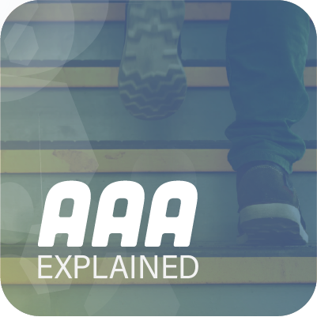

Arrange, Act, and Assert is the acronym for Arrange, Act, and Assert. This is an excellent approach to ensure that we're testing every part of a code module. It means to arrange the data in order to prepare it for testing, act on the data by using a method that acts, and assert that the outcome of acting on the data is what we anticipated.
def test_reverse()
greek = ['alpha', 'beta', 'gamma', 'delta'] #Arrange
result = greek.reverse() #Act
Assert result is None #Assert
Assert greek == ['delta', 'gamma', 'beta', 'alpha'] #Assert
Why is AAA Testing Important?AAA testing is important because it isolates a section of code and validates its correctness and assists in identifying and fixing bugs early. It also assures cost savings by resolving bugs as soon as possible and assists developers in improving the design by allowing code refactoring and simplifying the debugging process.
Define Test Case class in Python Unit Test - Import the unittest library with the command:
import unittestCreate a unit test case class that extends the unittest.TestCase with the code:
class TestCalculator(unittest.TestCase):
Implement class level or instance level setup or teardown function. The class-level setup function will be executed before all test functions only once, while the instance-level setup function will be executed before each test function. Class-level teardown function will be executed after all test functions only once and instance-level teardown function will be executed after each test function.The class-level setup or teardown function should be annotated with @classmethod annotation.
Define test function in the test case class. The test function’s name should start with ‘test_’. And run the target class method which needs to be tested in the test function.
Run Unit Test function in Test Suite - Create an instance of unittest.TestSuite class.
test_suite = unittest.TestSuite()
Add test case class object with the test function name to the test suite. You can add multiple test case instance with the different test function name.
Create a unittest.TextTestRunner object, and use it to run the test suite
test_runner = unittest.TextTestRunner()
test_runner.run(test_suite)
If you want to run all test functions of the test case class, you can invoke unittest.main() function directly with the following code
unittest.main()